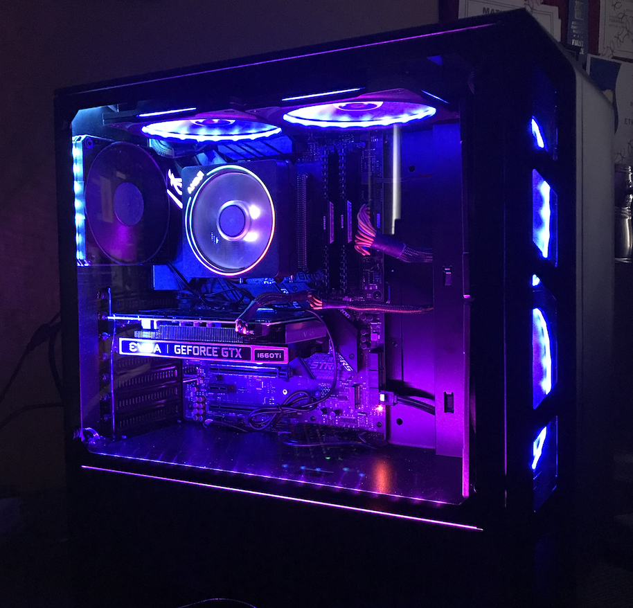
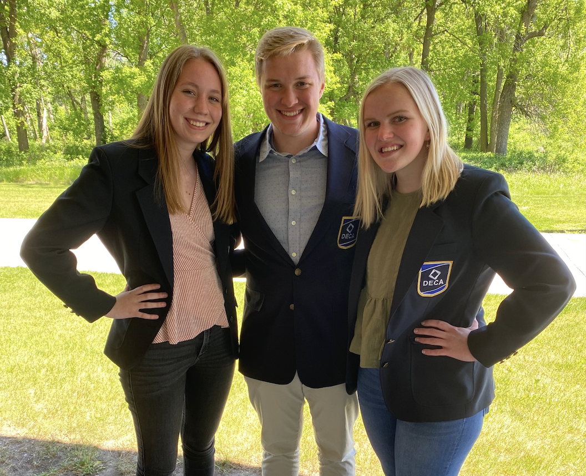

Projects!
During high school I really liked playing video games, and all of my friends had their own computer,
so in 11th grade I decided to build my own. It was the most fun project I have ever worked on and
I overcame a lot of challenges along the way. I learned so much while researching and buying and
buying parts, and soon after completing my own I helped my sister build a computer as well.
Successfully building my own computer has had a big impact in my life, being one of the main reasons
I decided to major in computer science.


Another project that really got me into computers and programming was the game design class I took
in 10th grade. Using a platform called "Construct3" I coded my own video game over the course of a
couple months. At the end of the class, I submitted my game to a national competition, where I
placed in the top 12! The joy I found in creating something that other people enjoyed motivates me
in every project I do.
This project is not related to computer science, but is still one of the projects I am most proud
of. My senior year of high school I was one of the three DECA Presidents at my high school, and we
ran the DECA program of over 100 students. Over the course of 6 months we worked on a business
operations plan with a local business, and then took that 20-page paper and 15 minute presentation to
competition. After winning state we competed at internationals, where we placed in the top 15 teams
in the world.
